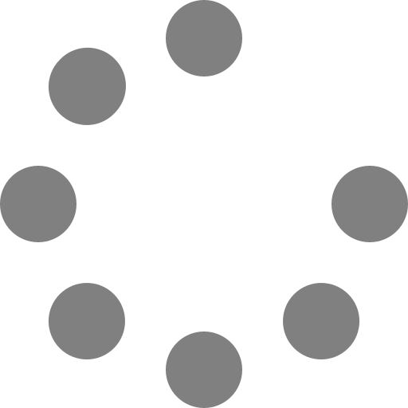
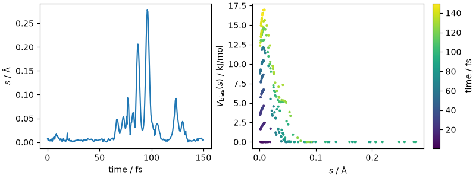
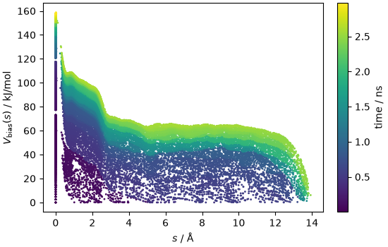
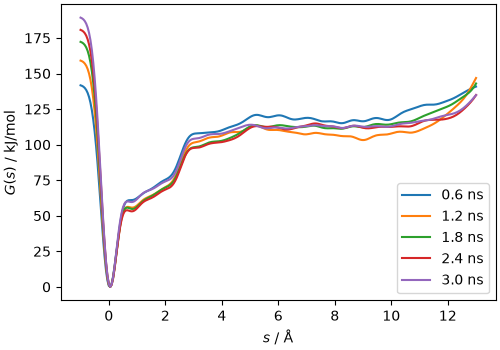
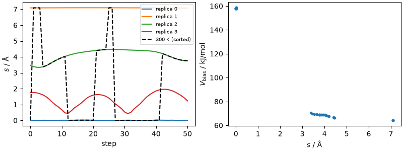
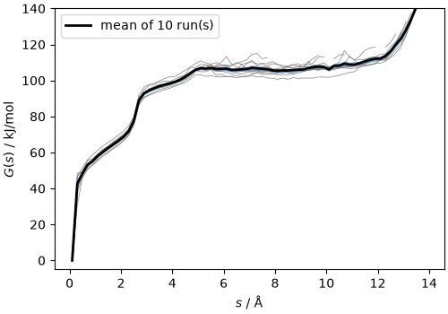
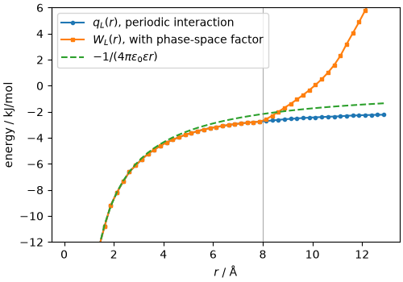
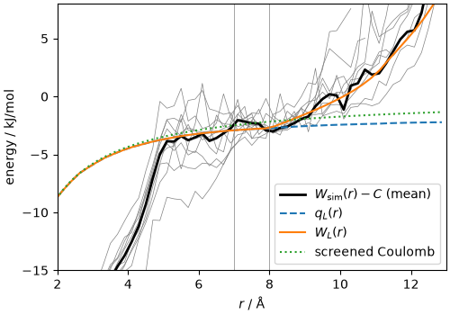
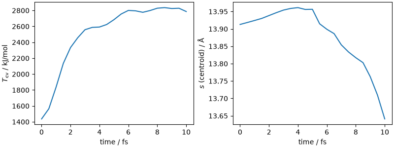
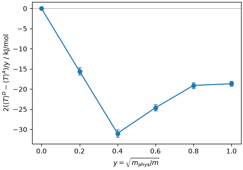

Note
Go to the end to download the full example code.
Computing the pKw of water with a machine-learning potential¶
- Authors:
Michele Ceriotti @ceriottm
The autoionization of water, \(\mathrm{2H_2O \rightleftharpoons H_3O^+ + OH^-}\), is the prototypical acid-base equilibrium, and its equilibrium constant \(K_\mathrm{w}=[\mathrm{H_3O^+}][\mathrm{OH^-}]/(c^\circ)^2\) (\(\mathrm{p}K_\mathrm{w}=-\log_{10}K_\mathrm{w}=13.93\) at 300 K) sets the scale of every \(\mathrm{p}K_\mathrm{a}\) and \(\mathrm{p}K_\mathrm{b}\). Computing it from first principles is a stringent test of a simulation protocol, because it combines several ingredients that are each worth one or more pK units if neglected: a reactive potential, collective variables that follow the proton as it hops between molecules, enhanced sampling of a free energy of about \(32\,k_\mathrm{B}T\), a well-defined relation between the free-energy profile and the equilibrium constant, the long-range Coulomb interaction of the products in a small periodic box, and the quantum nature of the nuclei.
This recipe walks through the protocol discussed in this paper, stage by stage, using i-PI for the dynamics, PLUMED for the collective variables and the bias, and the metatomic interface both for the machine-learning potential and for the collective variable. The stages are:
definition of a smooth collective variable for the hydronium-hydroxide separation, and its implementation as a
metatomicmodel that can be used from PLUMED;well-tempered metadynamics along this collective variable, to build a bias potential;
replica-exchange molecular dynamics with the frozen bias, to obtain converged Boltzmann weights;
reweighting to recover the free-energy profile and the potential of mean force;
calibration of the long-range behavior of the potential of mean force against the Coulomb interaction of point charges in the same periodic cell, which fixes the normalization and the finite-size corrections, and yields the classical \(\mathrm{p}K_\mathrm{w}\);
path-integral molecular dynamics with scaled nuclear masses, to obtain the quantum correction to the free energy of dissociation by thermodynamic integration.
Every stage is demonstrated live, on the actual 128-molecule water box used in the
paper. Each converged stage takes of the order of a day on a modern GPU, so the live
runs are just a few tens of MD steps, meant to show the mechanics of the workflow;
the analysis is then performed on the converged outputs of the production runs, that
are downloaded as a data bundle. The live runs use the general-purpose PET-MAD potential (extra-small version, which is fast
enough to run on CPU), whereas the production data were obtained with the
small PET-MAD-1.5 model fine-tuned to the revPBE0-D3 level of theory (CP2K,
TZV2P basis) on about 6000 structures of water, aqueous NaCl, NaOH and HCl, and
phosphate solutions (mean absolute errors of 1.07 meV/atom and 19.2 meV/Å on the
test set; density of water 0.937 g/cm³ at 300 K and 1 bar). The same model is
used for the acid and base dissociation of the phosphate species discussed at
the end, and it is included in the data bundle. At the end of each section we
indicate how long the corresponding simulation should be to obtain converged
results. The production runs used i-PI 3.3, PLUMED 2.10 (built with the
metatomic module, which is needed to evaluate the collective variable) and
metatomic-torch 0.1.16; this recipe is kept running with newer versions of the
libraries, so the production inputs provided with it may need small adjustments
to the syntax of the day.
Setup¶
Besides the usual scientific Python stack, we need torch and metatomic to
define the collective variable, ipi and plumed to run the simulations
(PLUMED must be compiled with the metatomic module, as the conda package
used in the environment of this recipe is; it is called through i-PI), torch-pme
to compute the Coulomb reference, and chemiscope to visualize structures.
import glob
import os
import shutil
import sys
import zipfile
from typing import Dict, List, Optional
import ase.io
import chemiscope
import ipi.scripting
import matplotlib.pyplot as plt
import metatensor.torch as mts
import metatomic.torch as mta
import numpy as np
import torch
import torchpme
import upet
from ase.geometry import get_distances
from atomistic_cookbook_utils import download_with_retry, run_command
from metatomic_ase import MetatomicCalculator
Warp 1.18.0 initialized:
CUDA Toolkit 13.4, CUDA driver not available (NVRTC compilation available)
Devices:
"cpu" : "x86_64"
Kernel cache:
/home/runner/.cache/warp/1.18.0
The simulations are short but the box is not small, so we limit the number of threads used by torch: the model does not benefit from many cores, and oversubscription slows things down when several processes run at once.
N_THREADS = 4
torch.set_num_threads(N_THREADS)
ENV = dict(os.environ, OMP_NUM_THREADS=str(N_THREADS), MKL_NUM_THREADS=str(N_THREADS))
# i-PI calls PLUMED through its Python module, which locates the PLUMED library
# through the PLUMED_KERNEL variable: point it to the one of the environment
ENV.setdefault("PLUMED_KERNEL", os.path.join(sys.prefix, "lib", "libplumedKernel.so"))
'/home/runner/work/atomistic-cookbook/atomistic-cookbook/.nox/pkw/lib/libplumedKernel.so'
Two sets of external data are used. The machine-learning potential for the live
runs is PET-MAD (extra-small, version 1.6), which we download and export as a
metatomic model.
MODEL = "pet-mad-xs-v1.6.0.pt"
if not os.path.exists(MODEL):
upet.save_upet(model="pet-mad", size="xs", version="1.6.0", output=MODEL)
The converged outputs of the production runs (the HILLS and COLVAR
files of the metadynamics, the 300 K series of the replica-exchange runs,
the PIMD kinetic energies, a short trajectory of a dissociation event, the
fine-tuned model production/model.pt and the template for the phosphate
species discussed at the end) are downloaded as a single archive (about
110 MB, from the atomistic-cookbook-data
repository on Hugging Face), unless it is already present, and unpacked in
the tmp/production folder. To reproduce the production runs, point
MODEL to the fine-tuned model, which
is a plain metatomic model with one peculiarity: it has two energy heads,
the one of the base model and the fine-tuned energy/pbe0, and the latter
must be selected with energy_variant:pbe0 in the ffdirect parameters
of the i-PI inputs, as done in the exact production inputs provided in
data/production-inputs/.
DATA_URL = (
"https://huggingface.co/datasets/lab-cosmo/atomistic-cookbook-data/"
"resolve/main/pkw/pkw-data.zip"
)
if not os.path.exists("tmp/production"):
if not os.path.exists("tmp/pkw-data.zip"):
download_with_retry(DATA_URL, "tmp/pkw-data.zip")
with zipfile.ZipFile("tmp/pkw-data.zip") as zf:
zf.extractall("tmp")
Finally, a few physical constants and the parameters of the system. The production simulations are at 300 K and 1 bar; the system is a cubic box of 128 water molecules.
TEMPERATURE = 300.0 # K
KB = 0.008314462618 # kJ/mol/K
KT = KB * TEMPERATURE
BETA = 1 / KT
EV_TO_KJMOL = 96.485332
LN10 = np.log(10.0)
initial_structure = ase.io.read("data/initial_structure.xyz")
print(initial_structure)
Atoms(symbols='H256O128', pbc=True, cell=[15.6482, 15.6482, 15.6482])
The collective variable¶
The products of the autoionization are fluxional: the excess proton and the proton hole diffuse through the solvent by a Grotthuss mechanism, and there is no fixed set of atoms that identifies \(\mathrm{H_3O^+}\) or \(\mathrm{OH^-}\). A useful collective variable must therefore first determine the charge state of every oxygen atom. We do this by partitioning each hydrogen atom \(j\) among the oxygen atoms \(i\) within a cutoff, with smooth weights
so that each hydrogen contributes exactly one unit to the oxygen atoms it is close to. The apparent charge of oxygen \(i\) is then \(q_i = \sum_j n_{j\to i} - 2\): it is close to \(+1\) for a hydronium, to \(-1\) for a hydroxide, and to zero for all other water molecules, and it changes smoothly during a proton transfer.
The separation between the ions can then be written as a dipole-like sum,
where \(\mathrm{mic}\) denotes the minimum-image convention, and the reference point \(\mathbf{r}_\mathrm{ref}\) is the “charge center” of the system, computed as a \(|q_i|\)-weighted circular mean of the oxygen positions along each Cartesian direction, which is compatible with periodic boundary conditions. When only two oxygen atoms carry a charge, \(s\) reduces to the distance between the hydronium and the hydroxide; when a charge is delocalized over several molecules, \(s\) follows the position of the charge defect without tracking specific atoms. We also compute an auxiliary quantity \(\delta = \sum_i q_i^2 - (\sum_i q_i)^2\), that counts the charged sites: it is zero for neutral water, about 2 for a single hydronium-hydroxide pair, and larger if additional ion pairs form. For the dissociation of a weak acid or base it vanishes unless the solvent autoionizes, and it can then be used to detect and suppress spurious ion pairs.
The same construction applies to the dissociation of a solute, with two
changes: the reference point is an atom of the solute (for example, the P atom for the
phosphate species), so that
\(s=\sum_i q_i |\mathrm{mic}(\mathbf{r}_i-\mathbf{r}_\mathrm{ref})|\)
over the solvent oxygens is signed, positive
for an acidic dissociation (a hydronium in the solvent) and negative for a
basic one (a hydroxide); and the oxygen atoms of the solute are ionizable
sites too, with the charge of the central atom partitioned among them in the
same smooth way (\(\sigma=1.0\) Å for P). Both branches then appear on
the same one-dimensional profile. For weak species, whose dissociation is
as hard as that of water, the bias also induces the autoionization of the
solvent, and \(\delta\) (restricted to the solvent oxygens) is used to
suppress it with a one-sided restraint. The metatomic model and the
inputs for the phosphate species are provided as a template, see the last
section.
Here is a straightforward NumPy implementation, that we will use as a reference.
CV_CUTOFF = 3.5 # A
CV_SIGMA = 0.3 # A
def apparent_charges(atoms, cutoff=CV_CUTOFF, sigma=CV_SIGMA):
"""Apparent charge of each atom (zero for hydrogen atoms)."""
io = np.where(atoms.numbers == 8)[0]
ih = np.where(atoms.numbers == 1)[0]
_, d = get_distances(
atoms.positions[io], atoms.positions[ih], cell=atoms.cell, pbc=True
)
w = np.where(d < cutoff, np.exp(-(d**2) / (2 * sigma**2)), 0.0)
w /= w.sum(axis=0) # each H is shared among nearby O
q = np.zeros(len(atoms))
q[io] = w.sum(axis=1) - 2
return q
def charge_separation(atoms, q):
"""Charge-weighted separation s and the auxiliary ion-pair counter delta."""
io = np.where(atoms.numbers == 8)[0]
qo, ro = q[io], atoms.positions[io]
lengths = atoms.cell.lengths()
# circular mean of the positions of the charged oxygens
phase = 2 * np.pi * ro / lengths
ref = (
np.arctan2(
(np.abs(qo)[:, None] * np.sin(phase)).sum(axis=0),
(np.abs(qo)[:, None] * np.cos(phase)).sum(axis=0),
)
* lengths
/ (2 * np.pi)
)
# minimum-image displacements from the reference point
frac = (ro - ref) @ np.linalg.inv(atoms.cell.array)
dr = (frac - np.round(frac)) @ atoms.cell.array
s = np.linalg.norm((qo[:, None] * dr).sum(axis=0))
delta = (qo**2).sum() - qo.sum() ** 2
return s, delta
Let us test this on a configuration that contains a dissociated ion pair, extracted from the production run.
dissociated = ase.io.read("data/dissociated.xyz")
q = apparent_charges(dissociated)
s, delta = charge_separation(dissociated, q)
charged = np.where(np.abs(q) > 0.5)[0]
print(f"charged oxygens: {charged}, q = {np.round(q[charged], 3)}")
print(f"s = {s:.3f} A, delta = {delta:.3f}")
charged oxygens: [105 219], q = [-1. 0.989]
s = 13.913 A, delta = 1.978
A metatomic model for the collective variable¶
To use \(s\) as a collective variable in PLUMED, we implement the same
expressions in a torch module that follows the metatomic conventions
(see also this recipe
for a more detailed discussion). The module declares the neighbor list it needs,
and receives it together with the structure, so that PLUMED (or any other
metatomic-compatible engine) can compute it efficiently. The forward
function returns a TensorMap with the two components \(s\) and
\(\delta\); the derivatives that are needed to bias \(s\) are computed
automatically by torch backpropagation.
class ChargeSeparation(torch.nn.Module):
def __init__(self, cutoff: float, sigma: float):
super().__init__()
self._nl_options = mta.NeighborListOptions(
cutoff=cutoff, full_list=True, strict=True
)
self._sigma = sigma
self._two_pi = 2 * torch.pi
def requested_neighbor_lists(self) -> List[mta.NeighborListOptions]:
return [self._nl_options]
def forward(
self,
systems: List[mta.System],
outputs: Dict[str, mta.ModelOutput],
selected_atoms: Optional[mts.Labels] = None,
) -> Dict[str, mts.TensorMap]:
# older and newer versions of the engines use different names
if "features" in outputs:
output_name = "features"
elif "feature" in outputs:
output_name = "feature"
else:
raise ValueError("this model only computes 'features'")
if outputs[output_name].per_atom:
raise NotImplementedError("per-atom output is not implemented")
if selected_atoms is not None:
raise NotImplementedError("selected_atoms is not implemented")
device = systems[0].positions.device
dtype = systems[0].positions.dtype
values = torch.zeros((len(systems), 2), dtype=dtype, device=device)
for i_sys, system in enumerate(systems):
if len(system) == 0:
continue # PLUMED probes the model with an empty system
positions, cell, types = system.positions, system.cell, system.types
nl = system.get_neighbor_list(self._nl_options)
i = nl.samples.column("first_atom")
j = nl.samples.column("second_atom")
d2 = (nl.values.reshape(-1, 3) ** 2).sum(dim=1)
# only O-H pairs (with the full list, each pair appears in both orders)
mask = (types[i] == 8) & (types[j] == 1)
i, j, d2 = i[mask], j[mask], d2[mask]
w = torch.exp(-d2 / (2 * self._sigma**2))
# normalize per hydrogen, then accumulate on the oxygens
norm = torch.zeros(len(system), dtype=dtype, device=device)
norm = norm.index_add(0, j, w)
w = w / norm[j]
q = torch.zeros(len(system), dtype=dtype, device=device)
q = q.index_add(0, i, w)
io = types == 8
q = q[io] - 2
ro = positions[io]
lengths = torch.linalg.norm(cell, dim=1)
phase = self._two_pi * ro / lengths
aq = torch.abs(q).unsqueeze(1)
ref = torch.atan2(
(aq * torch.sin(phase)).sum(dim=0), (aq * torch.cos(phase)).sum(dim=0)
)
ref = ref * lengths / self._two_pi
frac = (ro - ref) @ torch.linalg.inv(cell)
dr = (frac - torch.round(frac)) @ cell
values[i_sys, 0] = torch.linalg.norm((q.unsqueeze(1) * dr).sum(dim=0))
values[i_sys, 1] = (q**2).sum() - q.sum() ** 2
block = mts.TensorBlock(
values=values,
samples=mts.Labels(
"system", torch.arange(len(systems), device=device).reshape(-1, 1)
),
components=[],
properties=mts.Labels("cv", torch.tensor([[0], [1]], device=device)),
)
return {
output_name: mts.TensorMap(
keys=mts.Labels("_", torch.tensor([[0]], device=device)),
blocks=[block],
)
}
The module is wrapped into an AtomisticModel, that carries the metadata
needed by the engines (units, atomic types, the length of the receptive field,
which is used to build appropriate neighbor lists), and exported to a
TorchScript file.
cv_module = ChargeSeparation(cutoff=CV_CUTOFF, sigma=CV_SIGMA)
cv_model = mta.AtomisticModel(
cv_module.eval(),
mta.ModelMetadata(
name="charge separation",
description="hydronium-hydroxide separation from smooth apparent charges",
),
mta.ModelCapabilities(
length_unit="angstrom",
outputs={"features": mta.ModelOutput(per_atom=False)},
atomic_types=[1, 8],
interaction_range=CV_CUTOFF,
supported_devices=["cpu"],
dtype="float64",
),
)
cv_model.save("cv.pt")
/home/runner/work/atomistic-cookbook/atomistic-cookbook/examples/pkw/pkw.py:375: UserWarning: the 'features' output name is deprecated, please update the model to use 'feature' instead
cv_model = mta.AtomisticModel(
We can check that the exported model gives the same result as the reference
implementation, using the metatomic ASE calculator to compute the neighbor
list and evaluate the model on the dissociated configuration.
cv_calculator = MetatomicCalculator("cv.pt")
s_torch = (
cv_calculator.run_model(dissociated, {"features": mta.ModelOutput(per_atom=False)})[
"features"
]
.block()
.values
)
print(f"torch: s = {s_torch[0, 0]:.3f} A, delta = {s_torch[0, 1]:.3f}")
print(f"numpy: s = {s:.3f} A, delta = {delta:.3f}")
/home/runner/work/atomistic-cookbook/atomistic-cookbook/.nox/pkw/lib/python3.12/site-packages/metatomic/torch/model.py:75: UserWarning: the 'features' output name is deprecated, please update the model to use 'feature' instead
return AtomisticModel(model, model.metadata(), model.capabilities())
/home/runner/work/atomistic-cookbook/atomistic-cookbook/.nox/pkw/lib/python3.12/site-packages/torch/nn/modules/module.py:1789: UserWarning: the 'features' output name is deprecated, please update the engine to use 'feature' instead
return forward_call(*args, **kwargs)
torch: s = 13.913 A, delta = 1.978
numpy: s = 13.913 A, delta = 1.978
Visualizing a dissociation event¶
A short trajectory from the production simulations (20 frames, 50 fs apart, from one of the replica-exchange runs discussed below) shows what the order parameter captures. Note that the exported model only returns \(s\) and \(\delta\), which is all that PLUMED needs: the apparent charges are an intermediate quantity, that we compute here with the NumPy reference implementation to visualize them. Atoms are colored by their apparent charge (blue for the hydroxide oxygen, red for the hydronium oxygen; hydrogen atoms do not carry a charge in this definition and are left white), and an arrow from the most negative to the most positive oxygen shows the separation whose length is (approximately) \(s\). Positions are wrapped into the unit cell, and centered on the final position of the ion pair.
trajectory = ase.io.read("tmp/production/dissociation_traj.xyz", ":")
charges, separations, deltas, arrows = [], [], [], []
for frame in trajectory:
q = apparent_charges(frame)
s, delta = charge_separation(frame, q)
charges.append(q)
separations.append(s)
deltas.append(delta)
# arrow from the most negative to the most positive oxygen, minimum image
i_minus, i_plus = np.argmin(q), np.argmax(q)
vec = frame.get_distance(i_minus, i_plus, mic=True, vector=True)
arrows.append(
{"position": frame.positions[i_minus].tolist(), "vector": vec.tolist()}
)
chemiscope.show(
trajectory,
properties={
"s": {"target": "structure", "values": separations, "units": "Å"},
"delta": {"target": "structure", "values": deltas},
"q": {"target": "atom", "values": np.concatenate(charges)},
},
# per-atom properties are only displayed for atoms that are part of an
# "environment", so we declare all atoms as such (without highlighting them)
environments=chemiscope.all_atomic_environments(trajectory),
shapes={
"separation": {
"kind": "arrow",
"parameters": {
"global": {
"baseRadius": 0.15,
"headRadius": 0.3,
"headLength": 0.6,
"color": "#2ca02c",
},
"structure": arrows,
},
},
},
settings=chemiscope.quick_settings(
x="s",
y="delta",
trajectory=True,
structure_settings={
"atoms": True,
"bonds": True,
"unitCell": True,
"environments": {"activated": False},
"color": {"property": "q", "min": -1, "max": 1, "palette": "bwr"},
"shape": ["separation"],
},
),
)

Metadynamics with i-PI and PLUMED¶
The free energy of dissociation is about \(32\,k_\mathrm{B}T\), so spontaneous autoionization is never observed in an unbiased simulation. Well-tempered metadynamics along \(s\) deposits Gaussian hills that accumulate into a bias \(V_\mathrm{bias}(s)\), which in the long-time limit converges to \(-(1-1/\gamma)\,G(s)\), with \(\gamma\) the bias factor and \(G(s)\) the free energy along the collective variable.
The exact inputs of the production runs (for this and for the following
stages) are collected in data/production-inputs/, and they are the ones
we print and discuss. The live demonstrations use separate, much shorter
inputs (data/demo-*), that differ from the production ones only in the
model, the number of steps and a few parameters that are commented in the
files themselves, and that can be compared with the production inputs.
The PLUMED input evaluates the collective variable with the METATOMIC action,
using the model we just exported, selects the first component \(s\) and
applies well-tempered metadynamics to it, with hills of height
\(k_\mathrm{B}T\) and width 0.3 Å, deposited every 1000 steps (0.5 ps),
and a bias factor of 12. Harmonic walls keep \(s\) in the range where the
ions do not interact with their periodic images.
with open("data/production-inputs/metadynamics/plumed.dat") as f:
plumed_metad = f.read()
# the SPECIES lists are long, we do not print them in full
print("\n".join(line[:70] for line in plumed_metad.splitlines()))
# RESTART
cv: METATOMIC ...
MODEL=cv.pt
EXTENSIONS_DIRECTORY=extensions
DEVICE=cuda
SPECIES1={1 4 7 10 13 16 19 22 25 28 31 34 37 40 43 46 49 52 55 58
SPECIES2={2 3 5 6 8 9 11 12 14 15 17 18 20 21 23 24 26 27 29 30 32
SPECIES_TO_TYPES=8,1
...
D: SELECT_COMPONENTS ARG=cv COMPONENTS=1
mtd: METAD ...
ARG=D
HEIGHT=2.494*1 # 1kT in kJ/mol
SIGMA=0.3
PACE=1000
GRID_MIN=-5
GRID_MAX=25
GRID_BIN=500
BIASFACTOR=12
FILE=HILLS
TEMP=300
...
LOWER_WALLS ARG=D AT=-2 KAPPA=10
UPPER_WALLS ARG=D AT=12 KAPPA=10
PRINT ARG=D,mtd.* FILE=COLVAR
On the i-PI side, the input runs constant-temperature, constant-pressure
dynamics (a stochastic velocity rescaling thermostat, and an isotropic
barostat) with a 0.5 fs time step. The isothermal-isobaric ensemble is
important: the dissociated state has a different partial molar volume than
the associated state, and in a constant-volume simulation of a small box the
resulting pressure change would introduce a (small) contribution to the free
energy. The machine-learning potential is evaluated in the same process as
i-PI, through the ffdirect forcefield and the metatomic interface;
PLUMED is called through the ffplumed forcefield, and returns the value
of the collective variable as an “extra” that i-PI prints to a trajectory
file.
with open("data/production-inputs/metadynamics/input.xml") as f:
input_metad = f.read()
print(input_metad)
<simulation verbosity='medium'>
<total_time> 175000 </total_time>
<output prefix='simulation_svr'>
<properties stride='1' filename='out' flush='100'>
[ step, time{picosecond}, conserved{electronvolt},
temperature{kelvin}, kinetic_md{electronvolt}, potential{electronvolt},
temperature(H){kelvin}, temperature(O){kelvin}, ensemble_bias{ase}, pressure_md{bar}, density{g/cm3} ] </properties>
<trajectory filename='pos' stride='1' format="ase" flush='100'> positions </trajectory>
</output>
<total_steps> 10000000 </total_steps>
<prng>
<seed> 32342 </seed>
</prng>
<ffdirect name='cons' pbc='false'>
<pes>metatomic</pes>
<parameters>{template:initial_structure.xyz,model:model.pt,device:cuda,non_conservative:False,energy_variant:pbe0} </parameters>
</ffdirect>
<ffplumed name="plumed">
<file mode="xyz" units="angstrom"> initial_structure.xyz </file>
<plumed_dat> plumed.dat </plumed_dat>
<plumed_extras> [D] </plumed_extras>
</ffplumed>
<system>
<initialize nbeads='1'>
<file mode='ase' units='angstrom'> initial_structure.xyz </file>
<velocities mode='thermal' units='kelvin'> 300 </velocities>
</initialize>
<forces>
<force forcefield='cons'>
</force>
</forces>
<ensemble>
<temperature units='kelvin'>300</temperature>
<pressure units='bar'>1.0</pressure>
<bias>
<force forcefield="plumed"> </force>
</bias>
</ensemble>
<motion mode="dynamics">
<dynamics mode="npt">
<timestep units="femtosecond"> 0.5 </timestep>
<thermostat mode='svr'>
<tau units='femtosecond'> 20 </tau>
</thermostat>
<barostat mode='isotropic'>
<tau units='femtosecond'> 200 </tau>
<thermostat mode='langevin'>
<tau units='femtosecond'> 200 </tau>
</thermostat>
</barostat>
</dynamics>
</motion>
</system>
<smotion mode="metad">
<metad>
<metaff> [ plumed ] </metaff>
</metad>
</smotion>
</simulation>
The simulation is far too short to see anything happen (the production run is
2.7 ns, and this one is 150 fs at most), so for the demonstration
we also deposit hills much more often than in the production run, and make
them much narrower (0.01 Å instead of 0.3 Å). In such a short run \(s\)
only fluctuates by a few hundredths of an Å around the neutral state, and a
bias built from hills as wide as the production ones would be perfectly flat
over this range: the narrow hills make it possible to see the bias push the
system away from where it has been. This is a poor choice for a real run,
because a bias that is rough on a scale much finer than the features of the
free energy converges slowly and introduces large, noisy forces; the width
should instead be comparable to the resolution one wants for the profile.
Everything runs in a single process, so we can simply invoke i-pi with the
demonstration input (data/demo-metad.xml, that points to
data/demo-metad.dat for PLUMED). The small wrapper only tolerates the
occasional abort of the process during its teardown, after the simulation
has completed and all outputs have been written, which the combination of
torch threads and PLUMED produces now and then.
def run_ipi(input_file):
result = run_command(f"i-pi {input_file}", env=ENV, check=False)
if result.returncode not in (0, -6): # -6 is SIGABRT at exit
raise RuntimeError(f"i-PI failed with return code {result.returncode}")
run_ipi("data/demo-metad.xml")
The output of i-PI contains the usual thermodynamic quantities, and the bias
energy; the “extras” trajectory contains the value of the collective variable, that
is also printed by PLUMED in the COLVAR-metad file together with the bias.
In such a short run \(s\) just fluctuates around the small values that
correspond to the neutral molecules (it does not vanish because of the smooth
partitioning of the charges), but the narrow hills, whose height decreases as
the well-tempered bias builds up, already start to push it away from the
region that has been visited.
output, _ = ipi.scripting.read_output("metad.out")
colvar = ipi.scripting.read_trajectory("metad.colvar_0", format="extras")
# PLUMED output: time (in MD steps), s, bias
colvar_demo = np.loadtxt("COLVAR-metad")
fig, ax = plt.subplots(1, 2, figsize=(8, 3), constrained_layout=True)
ax[0].plot(output["time"] * 1000, colvar["D"])
ax[0].set_xlabel("time / fs")
ax[0].set_ylabel("$s$ / Å")
sc = ax[1].scatter(
colvar_demo[:, 1], colvar_demo[:, 2], c=colvar_demo[:, 0] * 0.5, s=4, cmap="viridis"
)
ax[1].set_xlabel("$s$ / Å")
ax[1].set_ylabel("$V_\\mathrm{bias}(s)$ / kJ/mol")
fig.colorbar(sc, ax=ax[1], label="time / fs")
plt.show()

The production run tells a more interesting story. Plotting the bias against
the collective variable, with the trajectory colored by time, shows how the
metadynamics progressively fills the associated basin, pushes the system to
form a contact ion pair and then to dissociate fully, and then keeps going
back and forth over an increasingly flat landscape. The COLVAR file
provided with the data (subsampled every 100 steps) contains time (in MD
steps), \(s\) and the bias.
colvar_prod = np.loadtxt("tmp/production/metad/COLVAR")
fig, ax = plt.subplots(1, 1, figsize=(5.5, 3.5), constrained_layout=True)
sc = ax.scatter(
colvar_prod[:, 1],
colvar_prod[:, 2],
c=colvar_prod[:, 0] * 0.5e-6,
s=1,
cmap="viridis",
rasterized=True,
)
ax.set_xlabel("$s$ / Å")
ax.set_ylabel("$V_\\mathrm{bias}(s)$ / kJ/mol")
fig.colorbar(sc, ax=ax, label="time / ns")
plt.show()

Estimating the free energy from the hills¶
The production run deposited a hill every 0.5 ps for several ns. The
HILLS file lists, for each hill, the time (in MD steps, as i-PI does not
pass the time step to PLUMED), the center, the width, the height (already
rescaled by the well-tempered factor) and the bias factor. The free energy
estimate at any time is obtained by summing the hills deposited up to that
time, and multiplying by \(-\gamma/(\gamma-1)\), which is what the
plumed sum_hills tool does. Here we do it explicitly, to show how the
estimate evolves.
hills = np.loadtxt("tmp/production/metad/HILLS")
gamma = hills[0, 4]
s_grid = np.linspace(-1, 13, 281)
def sum_hills(hills, s_grid, gamma):
"""Free energy estimate from the hills deposited so far."""
bias = np.zeros_like(s_grid)
for center, sigma, height in hills[:, 1:4]:
bias += height * np.exp(-((s_grid - center) ** 2) / (2 * sigma**2))
fes = -gamma / (gamma - 1) * bias
return fes - fes.min()
fig, ax = plt.subplots(1, 1, figsize=(5, 3.5), constrained_layout=True)
n_hills = len(hills)
for fraction in [0.2, 0.4, 0.6, 0.8, 1.0]:
fes = sum_hills(hills[: int(fraction * n_hills)], s_grid, gamma)
t_ns = hills[int(fraction * n_hills) - 1, 0] * 0.5e-6
ax.plot(s_grid, fes, label=f"{t_ns:.1f} ns")
ax.set_xlabel("$s$ / Å")
ax.set_ylabel("$G(s)$ / kJ/mol")
ax.legend()
plt.show()

Even after several nanoseconds, the estimate keeps oscillating by several kJ/mol in the dissociated region: the contact ion pair is separated from the solvent-separated pair by a barrier that involves the reorganization of the solvation shell, which is not well described by \(s\), and the recrossings are slow. Rather than trying to converge the metadynamics, we use the bias it has built as a fixed potential, and sample it with replica exchange.
How long to run: the production metadynamics is about 5.6 million steps (2.7 ns, of the order of a day on a modern GPU with the fine-tuned model). Convergence should be judged from the number of recrossings between the associated and dissociated states (a handful is enough for the bias to be “reasonable”), not from the flattening of the free-energy estimate.
Replica exchange with a fixed bias¶
There is a second, more fundamental reason to freeze the bias. The quantum corrections discussed at the end of this recipe require averages over the associated and dissociated states, and the free-energy profile itself is much easier to define, and to compute with well-defined error bars, when the bias is a fixed function of the coordinates \(V_\mathrm{bias}(s)\). The reweighting of a fixed-bias simulation is exact, and the only question is whether the biased ensemble is sampled well enough.
Freezing the bias in PLUMED is a one-line change: the RESTART keyword
makes METAD read the hills in the HILLS file and rebuild the bias
from them, and a huge PACE ensures that no further hill is deposited.
(An equivalent route is to convert the hills into a grid with
plumed sum_hills and use the EXTERNAL action.) The bias value is
printed together with \(s\), as it is all that is needed to reweight.
with open("data/production-inputs/remd/plumed.dat") as f:
plumed_fixed = f.read()
print(plumed_fixed[plumed_fixed.find("mtd:") - 150 :])
357 359 360 362 363 365 366 368 369 371 372 374 375 377 378 380 381 383 384}
SPECIES_TO_TYPES=8,1
...
D: SELECT_COMPONENTS ARG=cv COMPONENTS=1
mtd: METAD ...
ARG=D
HEIGHT=2.494*1 # 1kT in kJ/mol
SIGMA=0.3
PACE=400000000
GRID_MIN=-5
GRID_MAX=25
GRID_BIN=500
BIASFACTOR=12
FILE=HILLS
TEMP=300
...
LOWER_WALLS ARG=D AT=-2 KAPPA=10
UPPER_WALLS ARG=D AT=12 KAPPA=10
PRINT ARG=D,mtd.bias FILE=COLVAR
Since the frozen bias is only approximately the negative of the free energy,
the biased ensemble retains residual barriers, and we accelerate sampling
with parallel tempering: 8 replicas at temperatures between 300 and 400 K
(300, 313, 326, 339, 354, 368, 384 and 400 K), each with its own copy of the
bias, attempt to exchange configurations every 50 steps. Each of these runs
is repeated 10 times from different starting configurations, sampled from
the metadynamics trajectory so that they span the whole range of \(s\),
which provides a straightforward estimate of the statistical error. In
i-PI, replicas are separate <system> blocks, that are conveniently
generated from a <system_template> with the temperature and the index
of the starting structure as labels; the <smotion mode="remd"> block
handles the
exchanges. All replicas are sent to the model in a single batch, which is
much more efficient on a GPU. The production input, the ten starting
structures and a script that selects one of them are in
data/production-inputs/remd/.
with open("data/production-inputs/remd/input.xml") as f:
input_remd = f.read()
print(input_remd)
<simulation verbosity="medium">
<total_time>170000</total_time>
<output prefix="water">
<properties stride="1" flush="1000" filename="out"> [step, time{picosecond}, conserved{electronvolt},
temperature{kelvin}, kinetic_md{electronvolt}, potential{electronvolt}, ensemble_bias,pressure_md{bar}, density{g/cm3}] </properties>
<trajectory filename="pos" stride="100" format="ase" bead='0' flush="1000"> positions </trajectory>
<trajectory stride='1' filename="colvar" extra_type="D, mtd.bias" flush="1000"> extras_bias </trajectory>
</output>
<prng>
<seed>12345</seed>
</prng>
<ffdirect name='mta' threaded='True'>
<pes> metatomic </pes>
<parameters> {template:seeds/0.xyz,model:model.pt,energy_variant:pbe0,device:cuda:0,non_conservative:False } </parameters>
<batch_size> 8 </batch_size>
</ffdirect>
<ffplumed name="plumed" threaded="True">
<file mode="ase"> seeds/0.xyz </file>
<plumed_dat> plumed.dat </plumed_dat>
<plumed_extras> [ D, mtd.bias ] </plumed_extras>
</ffplumed>
<system_template>
<labels> [ IDX, TEMP ] </labels>
<instance> [ 00, 300 ] </instance>
<instance> [ 01, 313 ] </instance>
<instance> [ 02, 326 ] </instance>
<instance> [ 03, 339 ] </instance>
<instance> [ 04, 354 ] </instance>
<instance> [ 05, 368 ] </instance>
<instance> [ 06, 384 ] </instance>
<instance> [ 07, 400 ] </instance>
<template>
<system prefix="rep-IDX">
<initialize nbeads="1">
<file mode="ase"> seeds/0.xyz </file>
<velocities mode="thermal" units="kelvin"> TEMP </velocities>
</initialize>
<forces>
<force forcefield="mta">
</force>
</forces>
<motion mode="dynamics">
<dynamics mode="npt">
<timestep units="femtosecond"> 0.5 </timestep>
<thermostat mode='svr'>
<tau units='femtosecond'> 20 </tau>
</thermostat>
<barostat mode='isotropic'>
<tau units='femtosecond'> 200 </tau>
<thermostat mode='langevin'>
<tau units='femtosecond'> 200 </tau>
</thermostat>
</barostat>
</dynamics>
</motion>
<ensemble>
<temperature units='kelvin'> TEMP </temperature>
<pressure units='bar'>1.0</pressure>
<bias>
<force forcefield="plumed" nbeads="1">
<interpolate_extras> [D, mtd.bias] </interpolate_extras>
</force>
</bias>
</ensemble>
</system>
</template>
</system_template>
<smotion mode="remd">
<remd>
<stride> 50 </stride>
</remd>
</smotion>
</simulation>
For the demonstration (data/demo-remd.xml) we use only the four lowest
temperatures of the ladder (300, 313, 326, 339 K), four of the ten starting
structures, and attempt exchanges every 10 steps. The bias is read from the
production HILLS file.
demo_temperatures = [300, 313, 326, 339]
shutil.copy("tmp/production/metad/HILLS", "HILLS-remd")
run_ipi("data/demo-remd.xml")
i-PI writes one set of output files per replica (rep-*) and a
remd.remd_idx file that records, every time an exchange is accepted, the
step and the temperature slot occupied by each replica from the following
step on. Replica files follow a given set of atoms as it moves through the
temperature ladder; to obtain a continuous trajectory at a fixed temperature,
one has to demultiplex them, i.e. stitch together the segments of the
replicas that occupied a given temperature slot. The i-pi-remdsort tool
does this for all the output files, given the input of the simulation, and
writes the sorted files with a SRT_ prefix: SRT_rep-0_* then contains
the trajectory at the lowest temperature, and so on. The convention of the
index file is easy to get wrong, so we recommend using the tool rather
than a home-made script.
run_command("i-pi-remdsort data/demo-remd.xml", env=ENV)
# the extras trajectory contains a (n_steps, 2) array with s and the bias
replica_colvar = [
ipi.scripting.read_trajectory(f"rep-{i}_remd.colvar_0", format="extras")[
"D, mtd.bias"
]
for i in range(len(demo_temperatures))
]
sorted_colvar = ipi.scripting.read_trajectory(
"SRT_rep-0_remd.colvar_0", format="extras"
)["D, mtd.bias"]
s_300K, bias_300K = sorted_colvar[:, 0], sorted_colvar[:, 1]
if os.path.exists("remd.remd_idx"):
swaps = np.loadtxt("remd.remd_idx", dtype=int, ndmin=2)
print(f"{len(swaps)} exchanges accepted; slot of each replica after the last one:")
print(swaps[-1, 1:])
fig, ax = plt.subplots(1, 2, figsize=(8, 3), constrained_layout=True)
for i, c in enumerate(replica_colvar):
ax[0].plot(c[:, 0], label=f"replica {i}")
ax[0].plot(s_300K, "k--", label="300 K (sorted)")
ax[0].set_xlabel("step")
ax[0].set_ylabel("$s$ / Å")
ax[0].legend(fontsize=7)
ax[1].plot(s_300K, bias_300K, "o", ms=3)
ax[1].set_xlabel("$s$ / Å")
ax[1].set_ylabel("$V_\\mathrm{bias}$ / kJ/mol")
plt.show()

11 exchanges accepted; slot of each replica after the last one:
[1 3 0 2]
How long to run: each of the 10 independent production runs is about 870 000 steps (435 ps per replica, 4.3 ns in total for the 8 replicas; about one day on one GPU with the fine-tuned model). Convergence is monitored through the spread of the reweighted profiles among the independent runs.
Reweighting¶
The unbiased probability distribution of \(s\) is recovered from the biased ensemble by giving each configuration a weight \(e^{\beta V_\mathrm{bias}}\),
which in practice is a weighted histogram. We apply it to the 300 K series
of the independent production runs, sorted with i-pi-remdsort (to keep
the data bundle small, \(s\), the bias and the density are stored every
100 steps, i.e. every 50 fs, which is much shorter than the correlation time
of \(s\)). Note that the dissociated state is visited only during a few
excursions in each run, which is why the statistical error cannot be
estimated reliably from blocks of a single trajectory, and why we use the
spread among independent runs started from different configurations.
R_CUT = 7.0 # onset of the dissociated state, see below
def reweight(s, bias, temperature=TEMPERATURE, bin_width=0.2, s_max=14.0):
"""Free energy profile from a fixed-bias simulation."""
kt = KB * temperature
logw = bias / kt
logw -= logw.max() # avoids overflow, the constant does not matter
hist, edges = np.histogram(
s, bins=int(s_max / bin_width), range=(0, s_max), weights=np.exp(logw)
)
centers = 0.5 * (edges[1:] + edges[:-1])
with np.errstate(divide="ignore"):
fes = -kt * np.log(hist / hist.sum())
return centers, fes
colvar_files = sorted(glob.glob("tmp/production/remd/COLVAR_300K_*"))
runs = [np.loadtxt(f).T for f in colvar_files] # (s, bias, density) per run
profiles = []
for s_run, bias_run, _ in runs:
s_grid, fes = reweight(s_run, bias_run)
profiles.append(fes - fes[np.isfinite(fes)].min())
profiles = np.where(np.isfinite(profiles), profiles, np.nan)
fes_mean = np.nanmean(profiles, axis=0)
fes_err = np.nanstd(profiles, axis=0) / np.sqrt(len(runs))
fig, ax = plt.subplots(1, 1, figsize=(5, 3.5), constrained_layout=True)
for fes in profiles:
ax.plot(s_grid, fes, color="gray", lw=0.5)
ax.plot(s_grid, fes_mean, "k-", lw=2, label=f"mean of {len(runs)} run(s)")
ax.fill_between(s_grid, fes_mean - fes_err, fes_mean + fes_err, color="C0", alpha=0.5)
ax.set_xlabel("$s$ / Å")
ax.set_ylabel("$G(s)$ / kJ/mol")
ax.set_ylim(-5, 140)
ax.legend()
plt.show()

The profile rises steeply below 0.6 Å, more gently up to about 2.3 Å (a proton transferred to a neighboring molecule, i.e. a contact ion pair), jumps by about 20 kJ/mol when the ions become separated by one water molecule, reaching about 110 kJ/mol, and beyond about 7 Å it is only weakly modulated by the residual Coulomb attraction. The spread among independent runs is of a few kJ/mol in the dissociated region.
A remark on the thermodynamic ensemble¶
Since the simulations are at constant pressure, the same reweighting gives the volume of the associated and dissociated states, and we find that the ions occupy less volume than the neutral molecules (electrostriction). Had the simulation been run at constant volume, the dissociated state would be under tension, and the free energy of dissociation would be a Helmholtz free energy at the volume of the associated state, which differs from the Gibbs free energy by about \(\Delta V^2/(2\kappa_T V)\), with \(\kappa_T\) the isothermal compressibility, which we estimate here from the volume fluctuations. The correction is small for this system size, but it grows as \(1/V\), and it is easy to avoid altogether. Note that fixing the volume to the experimental density would be worse: the model’s density differs from the experimental one by a few percent, so that one would be simulating the model at a pressure of about 1 kbar, and the dissociation volume makes \(\mathrm{p}K_\mathrm{w}\) pressure dependent by about 0.4 units per kbar.
s_run, bias_run, rho_run = runs[0]
volume = 128 * 18.015 / (rho_run * 0.60221) # Å^3
logw = (bias_run - bias_run.max()) / KT
weights = np.exp(logw)
associated = s_run < 2.3
dissociated = s_run > R_CUT
v_assoc = np.average(volume[associated], weights=weights[associated])
v_dissoc = np.average(volume[dissociated], weights=weights[dissociated])
delta_v = v_dissoc - v_assoc
fluct = np.average((volume[associated] - v_assoc) ** 2, weights=weights[associated])
kappa = fluct / (KT * v_assoc) # Å^3 / (kJ/mol)
helmholtz_shift = delta_v**2 / (2 * kappa * v_assoc)
print(f"density: {128 * 18.015 / (v_assoc * 0.60221):.4f} g/cm^3 (associated)")
print(f"volume change on dissociation: {delta_v:.1f} Å^3")
print(f" = {delta_v * 0.60221:.1f} cm^3/mol")
print(f" = {100 * delta_v / v_assoc:.2f} %")
print(f"compressibility: {kappa / 16605:.2e} /bar (experiment: 4.5e-5 /bar)")
print(
f"constant-volume correction: {helmholtz_shift:.2f} kJ/mol, "
f"{helmholtz_shift / (KT * LN10):.3f} pK units"
)
density: 0.9368 g/cm^3 (associated)
volume change on dissociation: -20.3 Å^3
= -12.2 cm^3/mol
= -0.50 %
compressibility: 6.37e-05 /bar (experiment: 4.5e-5 /bar)
constant-volume correction: 0.05 kJ/mol, 0.008 pK units
From the free-energy profile to the equilibrium constant¶
The cleanest connection between a free-energy profile and a dissociation constant is the reversible work theorem. If \(g(r)\) is the pair distribution function of the two ions, normalized so that \(g\to 1\) at large separation, and \(W(r)=-k_\mathrm{B}T\ln g(r)\) the corresponding potential of mean force, the concentration of associated pairs is obtained by counting the configurations in which the ions are closer than a cutoff \(r_\mathrm{c}\), and
with \(c^\circ=1\,\mathrm{mol/L}\), i.e. one molecule per 1660.5 ų. This is the expression for the dissociation of a solute, of which there is one in the box: the integral is the effective volume in which the second product is bound to the first. For the autoionization of water both products come from the solvent, \(K_\mathrm{w}=[\mathrm{H_3O^+}][\mathrm{OH^-}]/(c^\circ)^2\), and the ratio between the probabilities of finding the box dissociated and associated, which is what the simulation measures, involves the partition functions of \(N\) water molecules on one side and of a free ion pair in the volume \(V\) on the other (every molecule can dissociate, and the products explore the whole box), so that
i.e. \(\mathrm{p}K_\mathrm{w}\) is larger than the solute-like estimate by \(\log_{10}(c^\circ V)\), about 0.36 for a box of 128 molecules (see the Supporting Information of the paper for the derivation). The integral is dominated by the associated basin, so the result is insensitive to \(r_\mathrm{c}\) as long as it lies beyond the barrier, and it is a probability: it does not depend on the details of how \(s\) is defined at short range. This is not the case for estimators that read the free energy at specific points of the profile (e.g. the difference between the minima of the associated and dissociated states), which carry the Jacobian of the collective variable and the entropy of the configurations that map onto each value of \(s\), and do not correspond to a well-defined standard state.
The profile from the simulation is related to the potential of mean force by the radial Jacobian, \(W_\mathrm{sim}(r) = G(r) + k_\mathrm{B}T\ln(4\pi r^2)\), but it is only known up to an additive constant \(C\), which must be fixed so that \(W(r)=W_\mathrm{sim}(r)-C\to 0\) at infinite separation. Since an error of \(k_\mathrm{B}T\ln 10\approx 5.7\) kJ/mol in \(C\) is one full pK unit, this step deserves as much attention as the sampling. The long-ranged Coulomb attraction between the ions means that \(W_\mathrm{sim}\) does not reach a plateau within a box of 128 molecules, and the two ions also interact with their periodic images.
Calibration against the periodic Coulomb interaction¶
The remedy is to compute the potential of mean force of two point charges \(\pm 1\) in a dielectric medium in a periodic box of the same size, \(q_L(r)\), and to determine \(C\) by matching the simulated profile to it at intermediate distances, beyond the contact and solvent-separated ion pairs but still within the range where the model has learned the effective ion-ion interaction. As \(q_L(r)\) tends to the infinite-system Coulomb interaction as \(L\to\infty\), the finite-size effects on \(K\) are absorbed into \(C\) at no extra cost.
We use torch-pme to compute the Ewald energy of the charge pair. Rather
than evaluating one two-charge system for every separation, we place a unit
charge at the origin and a large set of neutral “probe” points on a grid,
and evaluate the periodic potential at all of them in a single call. The
energy of a \(\pm 1\) pair is then minus twice the probe potential (the
per-atom potentials returned by torch-pme include a factor 1/2, so that
the energy is \(\sum_i q_i V_i\)) up to a constant, which we fix with a
single explicit two-charge calculation at a short reference distance. The
interaction free energy is a Boltzmann average over the points at a given
distance, \(q_L(r) = -k_\mathrm{B}T\ln\langle e^{-\beta E}\rangle_r\),
which accounts for the anisotropy of the periodic interaction.
There is one more subtlety. The collective variable is a minimum-image separation, so the directions that are accessible at a distance \(r\) are only those for which every Cartesian component is smaller than \(L/2\): beyond \(r=L/2\) the spherical shell is clipped by the cube, and its accessible area \(A(r)\) is smaller than \(4\pi r^2\). A potential of mean force obtained from the simulated profile with the full spherical Jacobian therefore contains a spurious term \(-k_\mathrm{B}T\ln[A(r)/4\pi r^2]\), that rises steeply beyond \(L/2\). The reference that the simulation should be matched to is thus \(W_L(r) = q_L(r) - k_\mathrm{B}T\ln[A(r)/4\pi r^2]\). The accessible fraction of the shell has a closed form: it is one up to \(L/2\), then \(3L/2r-2\) up to \(L/\sqrt{2}\) (six spherical caps are cut off by the faces of the cube), and up to \(L\sqrt{3}/2\), where the sphere no longer fits, it includes an inclusion-exclusion term for the overlap of pairs of caps along the edges. We plot both curves to make the distinction explicit.
EPSILON = 80.0 # dielectric constant of water
L_BOX = v_assoc ** (1 / 3) # average box length of the NPT production run, Å
CUTOFF_PME = 5.0 # real-space cutoff of the Ewald sum
R_REF = 2.6 # reference distance for the two-charge calculation
cell = torch.eye(3, dtype=torch.float64) * L_BOX
pme = torchpme.PMECalculator(
torchpme.CoulombPotential(
smearing=1.0, prefactor=torchpme.prefactors.kJmol / EPSILON
),
mesh_spacing=0.8,
interpolation_nodes=5,
)
def pme_potential(positions, charges):
"""Per-site potential of the periodic charge distribution (kJ/mol)."""
d = positions - positions[:1]
d = d - L_BOX * torch.round(d / L_BOX) # minimum image w.r.t. the origin
d = torch.linalg.norm(d, dim=1)
within = torch.where((d < CUTOFF_PME) & (d > 0))[0]
pairs = torch.stack([torch.zeros_like(within), within], dim=1)
return pme(charges, cell, positions, pairs, d[within]).flatten()
# two-charge reference energy at R_REF
two = torch.tensor([[0.0, 0.0, 0.0], [R_REF, 0.0, 0.0]], dtype=torch.float64)
q_two = torch.tensor([[1.0], [-1.0]], dtype=torch.float64)
e_ref = (q_two.flatten() * pme_potential(two, q_two)).sum().item()
# grid of probe points, plus the reference point as the first probe
n_grid = 40
grid = (np.indices((n_grid,) * 3).reshape(3, -1).T + 0.5) / n_grid * L_BOX
probes = torch.tensor(np.vstack([[0.0, 0.0, 0.0], [R_REF, 0.0, 0.0], grid]))
q_probes = torch.zeros((len(probes), 1), dtype=torch.float64)
q_probes[0, 0] = 1.0
phi = pme_potential(probes, q_probes)
energies = -2 * (phi[2:] - phi[1]) + e_ref # pair energy at each grid point
r_probes = grid - L_BOX * np.round(grid / L_BOX)
r_probes = np.linalg.norm(r_probes, axis=1)
def shell_fraction(r, box):
"""Fraction of a sphere of radius r that lies within a cube of side box."""
a = box / 2
r = np.asarray(r, dtype=float)
f = np.ones_like(r)
caps = (r > a) & (r <= a * np.sqrt(2))
f[caps] = 3 * a / r[caps] - 2
edges = (r > a * np.sqrt(2)) & (r < a * np.sqrt(3))
rr = r[edges]
c = np.sqrt(rr**2 - a**2)
# area of the sphere with x > a and y > a (overlap of two caps)
integral = a * (
np.arcsin(a / c)
- np.pi / 2
+ (rr / a) * (np.pi / 2 - np.arctan(a**2 / (rr * np.sqrt(rr**2 - 2 * a**2))))
)
overlap = 2 * rr * (integral - a * np.arccos(a / c))
f[edges] = 3 * a / rr - 2 + 12 * overlap / (4 * np.pi * rr**2)
f[r >= a * np.sqrt(3)] = 0.0
return f
# Boltzmann average over shells of the periodic interaction
dr = 0.25
r_edges = np.arange(0.0, 13.0 + dr, dr)
r_ref_grid = 0.5 * (r_edges[1:] + r_edges[:-1])
weights = np.exp(-BETA * energies.numpy())
counts, _ = np.histogram(r_probes, bins=r_edges)
sum_weights, _ = np.histogram(r_probes, bins=r_edges, weights=weights)
with np.errstate(divide="ignore", invalid="ignore"):
q_periodic = -KT * np.log(sum_weights / counts)
w_periodic = q_periodic - KT * np.log(shell_fraction(r_ref_grid, L_BOX))
The periodic interaction \(q_L(r)\) differs visibly from the screened Coulomb interaction \(-1/(4\pi\epsilon_0\epsilon r)\) at all separations that fit in the box, and \(W_L(r)\) departs from it beyond \(L/2\) because of the reduced phase-space volume.
fig, ax = plt.subplots(1, 1, figsize=(5, 3.5), constrained_layout=True)
ax.plot(r_ref_grid, q_periodic, "o-", ms=3, label="$q_L(r)$, periodic interaction")
ax.plot(r_ref_grid, w_periodic, "s-", ms=3, label="$W_L(r)$, with phase-space factor")
ax.plot(
r_ref_grid,
-torchpme.prefactors.kJmol / (EPSILON * r_ref_grid),
"--",
label="$-1/(4\\pi\\epsilon_0\\epsilon r)$",
)
ax.axvline(L_BOX / 2, color="gray", lw=0.5)
ax.set_xlabel("$r$ / Å")
ax.set_ylabel("energy / kJ/mol")
ax.set_ylim(-12, 6)
ax.legend()
plt.show()

We can now convert each reweighted profile into a potential of mean force, align it to \(W_L(r)\) over the window 7-10 Å (using a Boltzmann-weighted average of the difference, which emphasizes the region that is best sampled; the upper limit is kept a few Å below the wall), and evaluate the equilibrium constant with \(r_\mathrm{c}=7\) Å. Since \(r_\mathrm{c}<L/2\), the phase-space factor only affects the offset.
R_MATCH = (R_CUT, 10.0) # window used to determine the offset C
STD_VOLUME = 1660.54 # Å^3 per molecule at 1 mol/L
def pkw_from_profile(s_grid, fes, r_cut=R_CUT, r_match=R_MATCH):
"""Classical pKw from a free-energy profile along the ion separation."""
ok = np.isfinite(fes) & (s_grid > 0)
r, g = s_grid[ok], fes[ok]
w_sim = g + KT * np.log(4 * np.pi * r**2)
ok_ref = np.isfinite(w_periodic)
w_ref = np.interp(r, r_ref_grid[ok_ref], w_periodic[ok_ref])
window = (r >= r_match[0]) & (r <= r_match[1])
prob = np.exp(-BETA * w_sim[window]) * 4 * np.pi * r[window] ** 2
offset = np.trapezoid((w_sim - w_ref)[window] * prob, r[window]) / np.trapezoid(
prob, r[window]
)
w = w_sim - offset
bound = r <= r_cut
integral = np.trapezoid(
4 * np.pi * r[bound] ** 2 * np.exp(-BETA * w[bound]), r[bound]
)
# solute-like estimate, plus the log(c° V) term specific to autoionization
pk = np.log10(integral / STD_VOLUME) + np.log10(v_assoc / STD_VOLUME)
return pk, w, offset
pkws = np.array([pkw_from_profile(s_grid, fes)[0] for fes in profiles])
pkw_classical = pkws.mean()
# standard error of the mean over the independent runs
pkw_classical_err = pkws.std(ddof=1) / np.sqrt(len(pkws))
print(f"pKw of the individual runs: {np.round(pkws, 2)}")
print(f"classical pKw = {pkw_classical:.2f} +/- {pkw_classical_err:.2f}")
print(f"Gibbs free energy of dissociation: {pkw_classical * KT * LN10:.1f} kJ/mol")
pKw of the individual runs: [18.34 17.61 17.12 17.95 17.64 18.06 17.95 17.82 19.17 18.37]
classical pKw = 18.00 +/- 0.17
Gibbs free energy of dissociation: 103.4 kJ/mol
The paper reports \(\mathrm{p}K_\mathrm{w}=17.86\pm0.37\) (102.6 kJ/mol), where the error is the standard deviation among the ten independent runs (0.12 as a standard error of the mean).
fig, ax = plt.subplots(1, 1, figsize=(5, 3.5), constrained_layout=True)
for fes in profiles: # aligned potential of mean force of each run
_, w_run, _ = pkw_from_profile(s_grid, fes)
ok = np.isfinite(fes) & (s_grid > 0)
ax.plot(s_grid[ok], w_run, color="gray", lw=0.5)
_, w_mean, offset_mean = pkw_from_profile(s_grid, fes_mean)
ok = np.isfinite(fes_mean) & (s_grid > 0)
ax.plot(s_grid[ok], w_mean, "k-", lw=2, label="$W_\\mathrm{sim}(r) - C$ (mean)")
ax.plot(r_ref_grid, q_periodic, "C0--", label="$q_L(r)$")
ax.plot(r_ref_grid, w_periodic, "C1-", label="$W_L(r)$")
ax.plot(
r_ref_grid,
-torchpme.prefactors.kJmol / (EPSILON * r_ref_grid),
"C2:",
label="screened Coulomb",
)
ax.axvline(R_CUT, color="gray", lw=0.5)
ax.axvline(L_BOX / 2, color="gray", lw=0.5)
ax.set_xlim(2, 13)
ax.set_ylim(-15, 8)
ax.set_xlabel("$r$ / Å")
ax.set_ylabel("energy / kJ/mol")
ax.legend()
plt.show()

For comparison, the estimator that takes the free-energy difference between the associated minimum and the dissociated plateau gives a very different answer on the very same profile: this is a matter of definition, not of sampling, and it is essential to be explicit about the estimator when comparing with experiment or with other calculations.
plateau = np.nanmean(fes_mean[(s_grid > R_MATCH[0]) & (s_grid < R_MATCH[1])])
print(
f"minimum-to-plateau estimate: {plateau:.1f} kJ/mol, "
f"i.e. pK = {plateau / (KT * LN10):.2f}"
)
minimum-to-plateau estimate: 106.4 kJ/mol, i.e. pK = 18.52
The reversible-work estimator, instead, is insensitive to the choice of \(r_\mathrm{c}\) as long as it lies in the region where the profile follows the Coulomb reference: moving it between 6 and 8 Å changes the result by about 0.1 pK units, and only the values below the onset of the plateau are significantly off.
print("r_c / Å pKw")
for r_cut in [4.0, 5.0, 6.0, 7.0, 8.0]:
pk_scan = pkw_from_profile(s_grid, fes_mean, r_cut=r_cut, r_match=(r_cut, 10.0))[0]
print(f"{r_cut:5.1f} {pk_scan:6.2f}")
r_c / Å pKw
4.0 17.35
5.0 17.94
6.0 17.95
7.0 17.96
8.0 17.94
Nuclear quantum effects¶
Everything so far treats the nuclei as classical particles, which is a poor approximation for a reaction that breaks an O-H bond: the zero-point energy of the bond that is lost is only partly compensated by the stiffer environment of the ions, and the resulting correction is of several pK units. Repeating the enhanced sampling with path-integral molecular dynamics would be very demanding, and incompatible with the accelerated-convergence techniques that make PIMD affordable. Instead, we compute the quantum correction to the free energy difference by thermodynamic integration over the nuclear mass, which only requires converged averages in two well-defined states, so that those techniques can be used: the production runs below use 32 beads with a standard path-integral Langevin thermostat, but a PIGLET thermostat (see also the path-integrals recipe) would give converged kinetic energies with 4 to 6 beads, reducing the cost by a factor of about 6 if needed. If all masses are scaled as \(m_k = m^\mathrm{phys}_k/y^2\), so that \(y=1\) is the physical system and \(y\to 0\) the classical limit, the quantum correction to the dissociation free energy is
where \(\langle T\rangle_y\) is the quantum kinetic energy of the dissociated (D) and associated (A) states, computed with the centroid virial estimator. The integrand vanishes linearly for \(y\to 0\) and is smooth, so that five PIMD simulations per state are sufficient. No bias along \(s\) is needed: one-sided walls on \(s\) (acting on the centroid, 5 kJ/mol/Ų) confine the associated state below 3 Å and keep the dissociated state from recombining, beyond 5 Å, far from the region of interest.
The i-PI input is similar to the previous ones, with the number of beads,
a path-integral Langevin thermostat, the per-atom masses, and the
kinetic_cv estimator in the output (the production inputs, the two
starting structures, and a script that selects the state and sets the
masses for a given \(y\), are in data/production-inputs/pimd/).
with open("data/production-inputs/pimd/input.xml") as f:
input_pimd = f.read()
print(input_pimd)
<simulation verbosity='medium' safe_stride='100'>
<output prefix='pimd'>
<properties stride='1' filename='out' flush='100'> [ step, time{picosecond}, conserved{electronvolt}, temperature{kelvin}, kinetic_cv{electronvolt}, potential{electronvolt}, pressure_cv{bar}, density{g/cm3}, kinetic_td{electronvolt}, ensemble_bias ] </properties>
<trajectory filename='pos' stride='1' cell_units='angstrom' flush='100'> positions{angstrom} </trajectory>
<trajectory filename='kin' stride='1' cell_units='angstrom' flush='100'> kinetic_cv </trajectory>
<trajectory filename='kod' stride='1' cell_units='angstrom' flush='100'> kinetic_od </trajectory>
<trajectory stride="1" filename="COLVAR" bead="0" extra_type="D" flush='100'> extras_bias </trajectory>
</output>
<total_time> 129000 </total_time>
<total_steps> 1000000 </total_steps>
<prng>
<seed> 31415 </seed>
</prng>
<ffdirect name='mta'>
<pes> metatomic </pes>
<parameters> {template:associated.xyz,model:model.pt,energy_variant:pbe0,device:cuda:0;cuda:1,non_conservative:False,threaded:True } </parameters>
<batch_size> 32 </batch_size>
</ffdirect>
<ffplumed name="plumed">
<file mode="ase"> associated.xyz </file>
<plumed_dat> plumed-associated.dat </plumed_dat>
<plumed_extras> [ D ] </plumed_extras>
</ffplumed>
<system>
<initialize nbeads='32'>
<file mode='ase'> associated.xyz </file>
<velocities mode='thermal' units='kelvin'> 300 </velocities>
</initialize>
<forces>
<force forcefield='mta'> mta </force>
</forces>
<ensemble>
<temperature units='kelvin'> 300 </temperature>
<pressure units="bar">1.0</pressure>
<bias>
<force forcefield="plumed" nbeads="1">
<interpolate_extras> [ D ] </interpolate_extras>
</force>
</bias>
</ensemble>
<motion mode='dynamics'>
<dynamics mode='npt'>
<thermostat mode="pile_l">
<tau units="femtosecond"> 20 </tau>
</thermostat>
<barostat mode='isotropic'>
<tau units='femtosecond'> 200 </tau>
<thermostat mode='langevin'>
<tau units='femtosecond'> 200 </tau>
</thermostat>
</barostat>
<timestep units='femtosecond'> 0.5 </timestep>
</dynamics>
</motion>
</system>
<smotion mode="metad">
<metad>
<metaff> [ plumed ] </metaff>
</metad>
</smotion>
</simulation>
For the demonstration (data/demo-pimd.xml) we run a handful of steps with
4 beads at the physical masses (\(y=1\), so that the masses need not be
specified), starting from the dissociated configuration. Note that the ring
polymers start collapsed onto the classical configuration, so that the
kinetic energy grows over the first few tens of femtoseconds as they expand.
run_ipi("data/demo-pimd.xml")
output, _ = ipi.scripting.read_output("pimd.out")
colvar = ipi.scripting.read_trajectory("pimd.colvar_0", format="extras")
fig, ax = plt.subplots(1, 2, figsize=(8, 3), constrained_layout=True)
ax[0].plot(output["time"] * 1000, output["kinetic_cv"] * EV_TO_KJMOL)
ax[0].set_xlabel("time / fs")
ax[0].set_ylabel("$T_\\mathrm{cv}$ / kJ/mol")
ax[1].plot(output["time"] * 1000, colvar["D"])
ax[1].set_xlabel("time / fs")
ax[1].set_ylabel("$s$ (centroid) / Å")
plt.show()

The production runs use 32 beads, about 390 000 steps (at least 170 ps are needed) for each of the 5 values of \(y\) and each of the two states (of the order of a day each on a modern GPU). The data bundle contains, for each run, the time series of the total centroid-virial kinetic energy; we use all of it, whereas the paper analyzed the first 330 000 steps, which changes the result by about 0.4 kJ/mol, within the statistical error. Its correlation time is only a few femtoseconds, so the statistical error of each average, estimated from the integrated autocorrelation time of the series, is small; the errors of the two states are combined, since they come from independent simulations.
Y_VALUES = [0.2, 0.4, 0.6, 0.8, 1.0]
N_EQUIL = 10000 # steps discarded for equilibration (5 ps)
def autocorrelation_time(x, c=5.0):
"""Integrated autocorrelation time, with the self-consistent window of Sokal."""
x = np.asarray(x, dtype=float) - np.mean(x)
n = len(x)
f = np.fft.rfft(x, 2 * n)
acf = np.fft.irfft(f * np.conjugate(f))[: n // 2]
acf /= acf[0]
tau = 0.5 + np.cumsum(acf[1:])
window = np.where(np.arange(1, len(tau) + 1) >= c * tau)[0]
return tau[window[0]] if len(window) else tau[-1]
def mean_and_error(x):
x = np.asarray(x, dtype=float)
n_eff = len(x) / (2 * autocorrelation_time(x))
return x.mean(), x.std(ddof=1) / np.sqrt(n_eff)
kinetic = {}
for state in ["associated", "dissociated"]:
for y in Y_VALUES:
data = np.load(f"tmp/production/pimd/{state}_y{y}.npz")
series = data["total"][N_EQUIL:] * EV_TO_KJMOL # stored in eV
kinetic[state, y] = mean_and_error(series)
ys = np.array([0.0] + Y_VALUES)
integrand = np.zeros(len(ys))
integrand_err = np.zeros(len(ys))
for k, y in enumerate(Y_VALUES, start=1):
t_d, e_d = kinetic["dissociated", y]
t_a, e_a = kinetic["associated", y]
integrand[k] = 2 * (t_d - t_a) / y
integrand_err[k] = 2 * np.sqrt(e_d**2 + e_a**2) / y
# trapezoidal rule and error propagation (the points are independent)
trapz_weights = np.zeros(len(ys))
trapz_weights[:-1] += np.diff(ys) / 2
trapz_weights[1:] += np.diff(ys) / 2
ddg_nqe = np.sum(trapz_weights * integrand)
ddg_nqe_err = np.sqrt(np.sum((trapz_weights * integrand_err) ** 2))
print(f"Delta Delta G_NQE = {ddg_nqe:.2f} +/- {ddg_nqe_err:.2f} kJ/mol")
fig, ax = plt.subplots(1, 1, figsize=(5, 3.5), constrained_layout=True)
ax.errorbar(ys, integrand, yerr=integrand_err, fmt="o-", capsize=3)
ax.axhline(0, color="gray", lw=0.5)
ax.set_xlabel("$y = \\sqrt{m_\\mathrm{phys}/m}$")
ax.set_ylabel("$2(\\langle T\\rangle^D - \\langle T\\rangle^A)/y$ / kJ/mol")
plt.show()

Delta Delta G_NQE = -19.92 +/- 0.35 kJ/mol
The kinetic energy of the dissociated state is lower at all masses, and the correction is large and negative: it brings the classical value down by more than three pK units (the paper reports \(\Delta\Delta G_\mathrm{NQE} = -20.4 \pm 0.4\) kJ/mol, and a classical \(\mathrm{p}K_\mathrm{w}\) of \(17.86\pm0.37\) from the ten independent runs, where the error is the standard deviation among runs, giving \(14.31\pm0.37\) against the experimental 13.93 at 300 K). Its magnitude depends on the potential and on the species, and there is no universal value that can be transferred from one system to another.
pkw_shift = ddg_nqe / (KT * LN10)
pkw_shift_err = ddg_nqe_err / (KT * LN10)
pkw_quantum = pkw_classical + pkw_shift
pkw_quantum_err = np.sqrt(pkw_classical_err**2 + pkw_shift_err**2)
print(f"classical pKw: {pkw_classical:6.2f} +/- {pkw_classical_err:.2f}")
print(f"NQE correction: {pkw_shift:6.2f} +/- {pkw_shift_err:.2f}")
print(f"quantum pKw: {pkw_quantum:6.2f} +/- {pkw_quantum_err:.2f}")
print("experiment: 13.93")
classical pKw: 18.00 +/- 0.17
NQE correction: -3.47 +/- 0.06
quantum pKw: 14.53 +/- 0.18
experiment: 13.93
Summary¶
Each of the steps in this recipe is worth one or more pK units: the estimator and its standard state, the treatment of long-range interactions and finite-size effects, the thermodynamic ensemble, and the quantum nature of the nuclei. Machine-learning potentials make it affordable to do all of them properly: the whole quantum correction costs about 120 million force evaluations (32 beads, ten runs of 390 000 steps), and the classical profile about 70 million (8 replicas, ten runs of 435 ps, plus 2.7 ns of metadynamics), i.e. a few GPU-days in total with current hardware.
Beyond water: acids and bases¶
The same protocol applies to the acidic and basic dissociation of a solute, with the signed collective variable discussed at the beginning. The paper demonstrates it on the four phosphate species \(\mathrm{H_3PO_4}\), \(\mathrm{NaH_2PO_4}\), \(\mathrm{Na_2HPO_4}\) and \(\mathrm{Na_3PO_4}\) (with sodium counterions, 128 water molecules in a rhombic-dodecahedral box), which together give three \(\mathrm{p}K_\mathrm{a}\) and three \(\mathrm{p}K_\mathrm{b}\) values and, through \(\mathrm{p}K_\mathrm{a}+\mathrm{p}K_\mathrm{b}=\mathrm{p}K_\mathrm{w}\), a consistency check that does not depend on experiment. The differences with respect to the water case are few:
the two branches of the profile (\(s>0\) acidic, \(s<0\) basic) are analyzed separately, each with its own Coulomb reference computed for the charges of the two products (e.g. \(+1\) and \(-2\) for the acidic dissociation of \(\mathrm{H_2PO_4^-}\); for a pair with a net charge the Wigner self-energy of the neutralizing background is subtracted), with \(r_\mathrm{c}=7\) Å and the association integral over \([-1, 7]\) or \([-7, 1]\) Å, and with the solute prefactor \(1/c^\circ\);
the metadynamics parameters (hill height, bias factor) are adapted to the height of the barrier of each species, and for the two amphiprotic ions one-sided restraints on \(\delta\) suppress the autoionization of the solvent;
the thermodynamic integration is performed for the associated state and for each dissociated state.
The metatomic model of the collective variable and the complete i-PI and
PLUMED inputs for \(\mathrm{NaH_2PO_4}\) (metadynamics, fixed-bias replica
exchange and PIMD), with the parameters of the other species, are provided
in the data bundle (tmp/production/phosphate-template/, next to the
fine-tuned model that they require) as a starting point; the results, and a
discussion of the consistency check between conjugate pairs, can be found
in the paper.
Total running time of the script: (5 minutes 49.776 seconds)